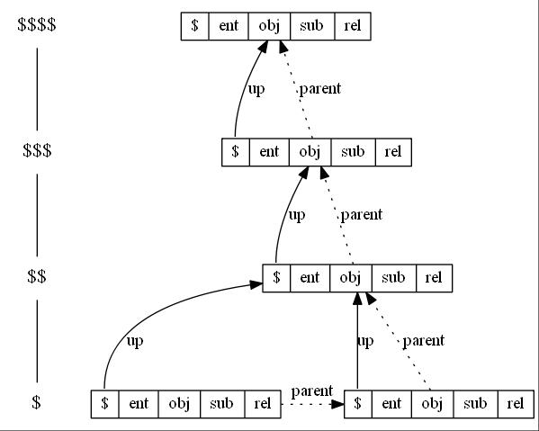

|
jsonRVM
json Relations (Model) Virtual Machine
|
|
jsonRVM
json Relations (Model) Virtual Machine
|
(1.сделать гиперсылки) (2.сделать картинки) (3.сделать примеры)
(объект -> тип) - тип объекта
и я нашел правило для порядка компонентов кортежа:
Правила эквивалентности кортежей в Модели Отношений
Для сущности и объекта: e = <o,s,r> <=> <<o,s>,r> <=> <e,r> <=> o = <e,r,s> <=> <<e,r>,s> <=> <o,s> <=> e e <=> <e,r> <=> <e,r,s> - сущность отношения субъекта o <=> <o,s> <=> <o,s,r> - объект субъекта отношения
Для отношения и субъекта: r = <s,o,e> <=> <<s,o>,e> <=> <r,e> <=> s = <r,e,o> <=> <<r,e>,o> <=> <s,o> <=> r r <=> <r,e> <=> <r,e,o> - отношение сущности объекта s <=> <s,o> <=> <s,o,e> - субъект объекта сущности
Ассоциативную модель есть множество кортежей длины 2: L ⊆ L × L = {(s,t): s ∈ L, t ∈ L} , где × - декартово произведение множеств.
Понять это можно следующим образом: каждая ассоциация в ассоциативной модели, ассоциирует одну ассоциацию с другой (либо с самой собой)
Множество взаимосвязанных множеств кортежей длины 2:
RM = {ER,OS,RE,SO}, где
ER - множество связей сущность-отношения
OS - множество связей объект-субъекта
RE - множество связей отношение-сущности
SO - множество связей субъект-объекта
Множество взаимосвязанных множеств кортежей длины 3:
RM = {E,O,R,S}, где
E - множество троичных сущностей
O - множество троичных объектов
R - множество троичных отношений
S - множество троичных субъектов
Запишем базовый словарь сущностей, в виде кортежей длины 2 и 3:
Ent = <Obj, Sub, Rel> = Rel = <Sub, Obj, Ent> = Sub = <Rel, Ent, Obj> = Obj = <Ent, Rel, Sub> =
Obj = RE = <Rel, Ent> - Объект есть существование отношения Sub = ER = <Ent, Rel> - Субъект есть отношение сущности Rel = SO = <Obj, Sub> - Отношение есть субъективация объекта Ent = OS = <Sub, Obj> - Сущность есть объективация субъекта
Ent = <Obj, Sub, Rel> = <<Obj, Sub>, Rel> - корневая сущность Rel = <Sub, Obj, Ent> = <Ent, <Obj, Sub>> - корневое отношение ? Sub = <Rel, Ent, Obj> = <Ent, Rel> - субъект Obj = <Ent, Rel, Sub> = <Rel, Ent> - объект
Ent = <<Sub, Obj>, Rel> = <<Sub, Obj>, <Ent, <Sub, Obj>>> Rel = <Ent, <Sub, Obj>> = <<<Sub, Obj>, Rel>, <Sub, Obj>> Sub = <<Rel, Ent>, Obj> = <<Rel, Ent>, <<Ent, Rel>, Sub>> Obj = <<Ent, Rel>, Sub> = <<Ent, Rel>, <<Rel, Ent>, Obj>>
SO = <Sub, Obj> - связь RE = <Rel, Ent> - сущность отношения: Ent = <Rel, Ent> = <<Ent, Rel>, Ent> ER = <Ent, Rel> - отношение сущности
ERE = <<Ent, Rel>, Ent> - сущность отношения сущности RER = <<Rel, Ent>, Rel> - отношение сущности отношения
Ent = <SO, Rel> = <SO, <Ent, SO>> Rel = <Ent, SO> = <<SO, Rel>, SO> Sub = <RE, Obj> = <RE, <ER, Sub>> Obj = <ER, Sub> = <ER, <RE, Obj>>
Ent = <SO, <Ent, SO>> = <SO, <<SO, <Ent, SO>>, SO>> Rel = <<SO, Rel>, SO> = <<SO, <<SO, Rel>, SO>>, SO> Sub = <RE, <ER, Sub>> = <RE, <ER, <RE, <ER, Sub>>>> Obj = <ER, <RE, Obj>> = <ER, <RE, <ER, <RE, Obj>>>>
Решение системы кортежей базового словаря: SO = <Sub, Obj> =?= Rel RE = <Rel, Ent> =?= Sub ER = <Ent, Rel> =?= Obj
Ent = <SO, Rel> = <Rel, Rel> Rel = <Ent, SO> = <Ent, Rel> Sub = <RE, Obj> = <Sub, Rel> Obj = <ER, Sub> = <Rel, Sub>
Модель данных используемая для хранения **Модели Отношений** в базе данных. Может быть основана на кортежах длины 2 (связях) и 3 (триплетах).
Это **Модель Отношений** в которой **отношение** учавствует в качестве **субъекта** **объекта** или **сущности**
Необходимо универсальное определение.
Есть **триплет**: < **субъект**, **сущность**, **объект** > либо 2 связи отношения сущности: < **субъект**, **сущность**, **объект** >
Вышестояший **контекст проявления** находится выше **текущего контекста исполнения** в **граф контекстов исполнения**. Последовательно вышестоящие контексты исполнения обозначается местоимениями $$, $$$, $$$$ и т.д.
Есть структура для хранения **состояния РВМ**. **Контексты исполнения** РВМ образуют мультистэк посредством связей двух типов: **родительской связи** и **контекстной связи**. РВМ может порождать **дочерние контексты исполнения** на текущем уровне, на вложенном или на вышестоящем при этом связь с **вышестоящим контекстом исполнения** есть независимо от родительского.

Это **контекст исполнения** порождённый РВМ из **текущего контекста исполнения** при **исполнении сущности**.
Процесс проявления **сущности отношения** в **контексте исполнения** РВМ.
Есть результат субъективации отношения. Есть элемент для хранения субъективного состояния РВМ. Есть место проявления **сущности отношения** в процессе работы РВМ.
По своей структуре контекст исполнения тоже является **отношением** в **мультистеке контекстов отношения**.
Так же функцией контекста исполнения является предоставление доступа через **местоимения** к текущей проявляемой **сущности отношения**.
Объективно контекст исполнения это структура данных, включающая следующие члены:
Местоимение для ссылки на текущий объект контекста исполнения Обозначается через $obj
Текущее **состояние отношения** **контекста исполнения** Местоимение для ссылки на контекстное отношение обозначается через $rel
Это связь нижележащих контекстов исполнения с вышестоящим. Эта связь хранится в структуре данных контекста исполнения и используется для доступа к вышестоящим уровням контекста исполнения через **местоимения**.
Местоимение для ссылки на субъект контекста исполнения РВМ Обозначается через $sub
**Местоимение** для ссылки на **сущность**, проекцией которой является текущий **контекст исполнения** РВМ Обозначается через $ent
Контекст исполнения для которого вышестоящим является он сам
Сущность - экземпляр отношения, в котором эта же сущность выступает в роли субъекта, отношения и объекта.
Массив json значений, которое необходимо исполнить RVM в текущем контексте, при этом последовательно используется текущее значение отношение
Множество пар "имя поля": значение поля, где:
Вычисление проекций множества пар должно происходить параллельно, в многопоточном режиме
Указательное местоимение - есть самостоятельное отношение. Имя - ссылка, которая указывает на разные уровни **контекста исполнения** или **переменные контекста исполнения** РВМ
Это члены структуры данных **контекста отношения**
Множество **сущностей** связанное **отношениями**. **Модель Отношений** определяет **внутреннюю** и **внешнюю** **структуру сущности**.
**Модель отношений** исполняется внутри контекста исполнения.
В Модели Отношений под понятиями субъект, сущность и объект всегда подразумеваются субъект отношения, сущность отношения и объект отношения соответственно.
Объект есть сущностная субъективация отношения.
Есть относительное понятие, выражающее объективный аспект отношения, т.е. под объектом всегда подразумевается объект отношения. Это определенная **сущностью объекта** вещь, явление или процесс на которую направлена определённая **сущностью отношения** деятельность **субъекта**; при этом, в качестве объекта может выступать и сам **субъект**.
В МО имеется самостоятельное отношение субъект.
Выяснение значения отношения.
В зависимости от контекста употребления:
Etymology object + -ification, following objectify.
Pronunciation IPA(key): /ɒbˌdʒɛkt.ɪ.fɪˈkeɪ.ʃʌn/ Noun objectification (countable and uncountable, plural objectifications)
The process of objectifying something. Synonyms objectivization reification thingification
Получение контекстно зависимого **значения отношения** в результате **исполнения сущности** **отношения** в **контексте исполнения**. Реализуется посредством исполнения самостоятельного отношения субъекта как сущности.
Отношение как сущность есть субъективное осуществление объекта.
Есть абсолютное понятие, потому что полностью определяется **триплетом** сущностей: < **субъект**, **сущность**, **объект** >.
По сути отношение есть процесс взаимодействия **субъекта** с **объектом**, заключенный в отнесении **сущности** объекта в субъект.
Субъективно описывается в МО в виде **сущности отношения**.
Объективно существует в виде текущего **состояния отношения** в **контексте исполнения**.
Есть фаза работы РВМ, во время которой из отношения создаётся новой **контекст исполнения** для проявления **сущности отношения** и выяснения субъективного **значения отношения**.
Есть субъект проявляющий модель отношений Есть механизм проявляющий сущности отношений в текущем контексте отношения и интегрирующий текущее отношение.
Есть субъективный результат определённого **сущностью** **отношения** **субъекта** с **объектом** хранимый в **контекстном отношении**
Результат отношения это субъективное значение **контекстного отношения** определяемое в процессе **исполнения сущности** **отношения** в **контексте исполнения**.
?
Это **контекст отношения** в котором РВМ породила **текущий контекст отношения** при вычислении отношения ? **исполнении сущности**.
Кортеж длины 2, также носит название «упорядоченная пара» В **Модели отношений** две связи могут использоваться для определения **внутренней структуры сущности**:
Rel_SO = <Sub, Obj> - объективация Ent = <Rel, Rel_SO> - субъективация
Это связь **дочернего контекста исполнения** с **родительским контекстом исполнения**. Эта связь автоматически образуется и используется РВМ для своей работы.
Есть её **Модель Отношений**
Есть относительное понятие, выражающее субъективный аспект отношения. Это носитель деятельности направленной на **объект**, суть которой определенна **сущностью отношения**
Это создание нового контекста исполнения из сущности в процессе работы РВМ
Etymology subjective + -ation; attested since the 19th century.
Noun subjectivation (countable and uncountable, plural subjectivations)
The process of turning subjective.
Состояние РВМ субъективно, потому что оно есть результат субъективации МО
Есть относительное понятие, выражающее абсолютый принцип **отношения** рассмотренного внутрь.
Есть **сущность** определяющая суть отношения **субъекта** c **объектом**, т.е. принцип их взаимодействия
Есть определённое отношение между субъектом и объектом
Сущность это определённый **сущностью отношения** принцип или способ взаимодействия **субъекта** с **объектом**,
Сущность предмета выражается в его определении. Определение предмета выражает его сущность.
В качестве аналогии можно понимать, что сущность есть производная значения отношения как функции от времени: ent = rel' = d sub / d obj.
Есть сущность отношения выступающего в качестве объекта.
Парадигма программирования в основе которого лежит постулат, что всё есть **отношение**.
Это **контекст исполнения** который определяет область видимости для исполняемой в данный момент РВМ **сущности**. Текущий контекст исполнения обозначается **местоимением** $
Кортеж длины 3, также носит название «упорядоченная тройка» В **Модели отношений** один триплет может использоваться для определения **внутренней структуры сущности**:
Ent = <Sub, Obj, Rel>
https://studopedia.ru/10_41363_kortezhi-dekartovo-proizvedenie-mnozhestv.html
https://ru.wikipedia.org/wiki/Кортеж_(информатика)#Определения_в_теории_множеств В рамках теории множеств кортеж длины 3 можно индуктивно поставить в соответствие: <x1,x2,x3> = <<x1,x2>,x3> Другими словами, структурно триединство можно представить в виде двух двуединств.
Уровень **контекста исполнения** определяет вложенность в **дереве контекстов исполнения**. Бывают: **вышестоящие контекст исполнения** и **текущий контекст исполнения** Вышестоящие контексты исполнения обозначается через местоимения $$, $$$, $$$$ и т.д.